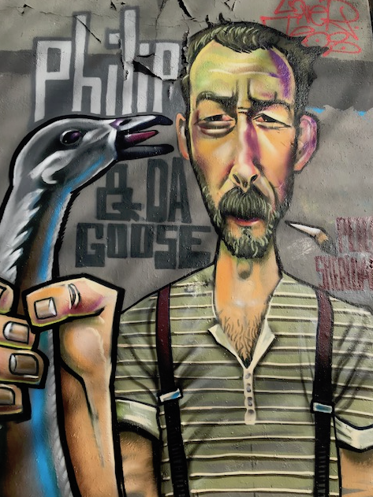
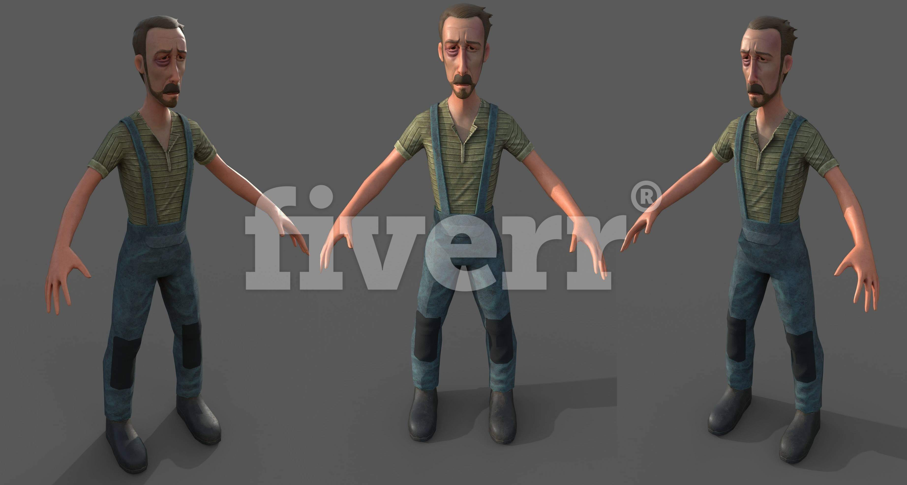

Zurich 3D the prototype
This is the project description of the prototype for the Zurich 3D project.
Motivation
In order to visualize simulations in 2D / 3D I searched for tools and I am referring to the Game Engine Unity3D, the CityEngine from Esri and the GIS browser of the city of Zurich.
Idea
Since cities such as today's Zurich are in the focus of the simulation, it makes sense to build a prototype with the city's 3D data. The city model consists only of the blocks of the buildings with the roofs.
So I would need a technology like Computer Generated Architecture (CGA) of CityEngine use or develop yourself.
| Outside |
Courtyard |
Architecture |
Night |
 |
 |
 |
 |
Otherwise it will be difficult to reach the goal within a reasonable time and with the financial means available to me.
Vision
Since Unity3D is a game engine, the following project idea was obvious: Simulation and Gamification Platform for Zurich in 3D
| Simulation |
Gamification |
 |
 |
Some may now ask: What does the social network look for there?
The MRS Mind Research Systems GmbH has the purpose: Research of thoughts and feelings
A social network is a memory for emotions, that I want to try to visualize in 3D.
- A Like is not a differentiated emotional expression?
- What does a Like related to an image refer to?
Answering such and other questions is the purpose of the simulation.
With Zurich 3D you can also realize interesting game applications ...üòÉ
Action
To handle such projects it is good to keep relevant literature. Because going wrong is still enough. üëª
To do everything alone is not a good idea. Freelancers can be found on platforms like Upwork. Organizing some expertise can not hurt. üòâ
Inspiration
My biggest inspiration is my Mommy, dlife in and of itself and of course Zurich. Then come all the instructive and beautiful books that I was allowed to read. And of course the many dear friends, who patiently listen to my displaced ideas and forgive me again and again when I knock the bottom out again. üôè
Plan / Team
The plan with a team from me and 3 experts in four weeks to develop the prototype for Zurich 3D zu entwickeln.
- Donat ▫️ Life Artist and Computer Scientist ▫️ Zurich, Switzerland
- Leonard ▫️ 3D Content Creator, Animator and Effects Artist ▫️ Douala, Cameroon
- Phil ▫️ GIS, CityEngine Expert / Developer ▫️ Kisumu, Kenya
- Nirmla ▫️ Expert with wordpress / PHP, HTML / CSS3, SASS, Angular JS ▫️ Mandi, India
Project
The project prototype Zurich 3D takes a four weeks sprint. Started on Monday 22.10.2018 and ends on Sunday 18.11.18.
üíØ Week 1
- Goal: To buy a 3D model of Zurich bought at TurboSquid for over $ 400.-. was unfortunately absolutely worthless see video report!). Alternatively, download the data from the GIS browser and try to bring it to life in Unity3D
- Period: 22.10.2018 - 28.10.18
- Duration: 7 days
- Donat enough hours
- Leonard 10 hours
- ü•á Success: 100%
- Summary: The TurboSquid model was a total junk, which luckily I got refunded. Leonard üë± joined the team and sent a video report on the üí© model of TurboSquid as Video Report
üíØ Week 2
- Goal: Combine data from OpenStreetMap and GIS browser and show it in Unity3D (80% of the time). First demo scene build in Unity3D (20% of the time).
- Period: 29.10.2018 - 04.11.18
- Duration: 7 days
- Donat enough hours
- Leonard 40 hours
- üëç Success: 80%
- Summary: I have not yet been able to organize the city's data as a 3D model in a file / archive. Leonard has sent a video report of his second week as Video Report. There were still too many open questions about the data and how to generate the facades to clarify why the demo scenes could not be shown.
üíØ Week 3
- Objective: Organize the city model Zurich 3D. Check CityEngine for options and licensing costs at Esri Switzerland , Find a GIS and CityEngine expert as a freelancer. Contact Zurich artists such as illustrators, 3D animation professionals or film producers. Find employees for 3D modeling, cartoon & anime draftsman as well as draftsman for 2D to 3D model conversion. Visit of a 3D body scanner and plastic figure printing service in Zurich. Create a bookmark collection for all the 3D, Unity animation sources on the internet. Buy and read books about animation, character style, architecture and design.
- Period: 05.11.2018 - 11.11.18
- Duration: 7 days
- Donat enough hours
- Leonard 7 hours
- Phil 28 hours
- ü•á Success: 100%
- Summary: 3D city model OGD(1.5 GB tar file). CityEngine Advanced (demo license 30days trial). Phil üë± joined the team.
Visited or phoned with:
Bookmarks collected: Wiki Animation 3D
üíØ Week 4
- Target: Retro of the last four weeks. Re-planning until the end of November 2018. Improve documentation quality. Create demo scenesSchindlerpark, Limmatplatz or Escher-Wyss-Platz, Kornhausbrücke.
- Duration: 7 days
- Donat enough hours
- Leonard 40 hours
- Phill 39 hours
- Nirmla 2 hours
- Period: 12.11.2018 - 18.11.18
- ü•á Success: 100%
- Summary: This project documentation and joined the team Nirmla üë©.
Residents of Zurich 3D
I proudly introduce you to our first inhabitant
Philip & da Goose
| 2D Grafity (Zurich Latvia) |
Interpretation Zurich 3D |
|  |
 |
More on zuerich3D.org ‚úåÔ∏èüå∏ soon